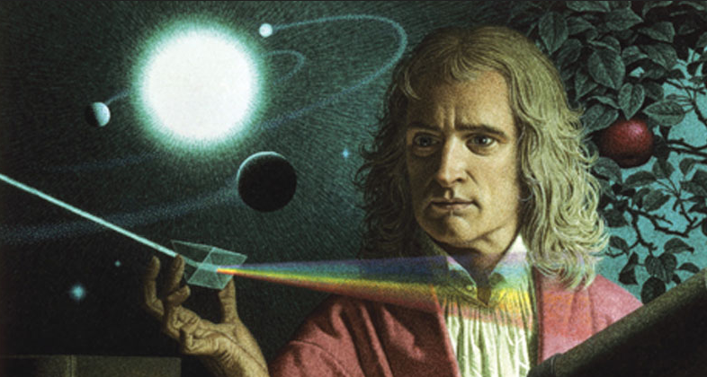

Isaac Newton was one of the most influential scientists and mathematicians in history. Born in England in 1643, he made discoveries that transformed the way people understood motion, gravity, light, and the natural world. His ideas became the foundation of classical physics and continue to influence science and technology today.!
Newton is best known for his three laws of motion and his law of universal gravitation, which helped explain how objects move on Earth and how planets travel through space. He also made important contributions to mathematics, including the development of calculus, and conducted groundbreaking experiments on light and color.
Newton's discoveries still shape the world around us.
Explore Newton's ideas with crisp blue highlights that emphasize motion, light, and clarity.
Click the main image to cycle through Newton-themed illustrations while the content stays calm and stable.
Soft gradients, blue accents, and clean cards keep the page elegant and easy to read.
An object stays at rest or continues moving at constant speed unless acted on by a force.
The acceleration of an object is proportional to the force applied and inversely proportional to its mass.
For every action, there is an equal and opposite reaction.
Click the button to reveal a Newton law highlight.
"If I have seen further it is by standing on the shoulders of giants."
Isaac Newton's original notes for his laws were written in Latin.
Newton was a thinker who combined curiosity and math to explain the universe. This portrait is placed here for a stronger visual balance on the right side of the page, away from the hero image.
His work launched the scientific revolution and still inspires physics, engineering, and space exploration.

Sir Isaac Newton (1643–1727)